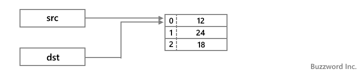
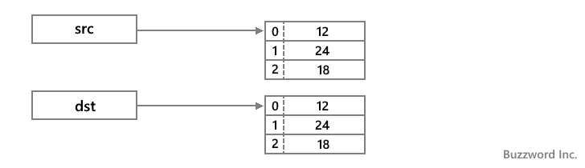
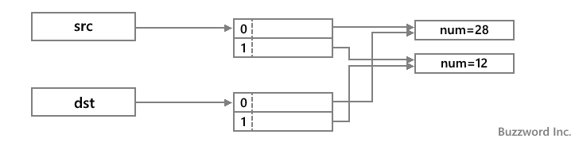
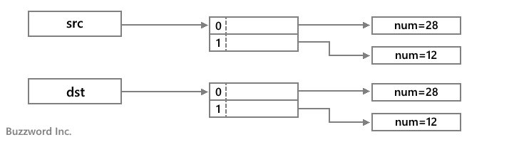

配列をコピーする(シャローコピーとディープコピー)
Java で作成した配列を別の配列にコピーする方法について解説します。単に = 演算子を使って配列変数を別の配列変数に代入した場合、同じ配列を参照するようになるだけです。独立した配列としてコピーするには手動でひとつひとつ要素を代入していくか、 Array クラスのメソッドを使用します。
目次
配列変数を別の配列変数に代入
最初に配列変数を別の配列変数に代入した場合を確認しておきます。次のサンプルを見てください。
int[] src = {12, 24, 18};
int[] dst = src;
System.out.println("src[0] = " + src[0]); // 12
System.out.println("dst[0] = " + dst[0]); // 12
一見すると配列がコピーできているように思いますが、配列のような参照型の場合は変数には配列本体への参照が格納されています。配列変数を別の配列変数に代入した場合、同じ配列本体への参照がコピーされるため、どちらの配列変数も同じ配列本体を参照することになります。

配列本体は同じため、要素の値を変更するとどちらの配列変数を使って要素の値を参照しても変更した値が取得されます。
int[] src = {12, 24, 18};
int[] dst = src;
System.out.println("src[0] = " + src[0]); // 12
System.out.println("dst[0] = " + dst[0]); // 12
src[0] = 42;
System.out.println("src[0] = " + src[0]); // 42
System.out.println("dst[0] = " + dst[0]); // 42
もちろん意図的に参照のコピーを行う場合にはこれでいいのですが、それぞれが独立した配列として要素の値だけをコピーしたい場合には別の方法を使用する必要があります。
要素の値をひとつひとつコピーする
コピー元の要素の値を一つ一つ取り出し、コピー先の要素に代入していく方法です。次のサンプルを見てください。
int[] src = {12, 24, 18};
int[] dst = new int[3];
for (int i = 0; i < src.length; i++){
dst[i] = src[i];
}
System.out.println("src[0] = " + src[0]); // 12
System.out.println("dst[0] = " + dst[0]); // 12
src[0] = 42;
System.out.println("src[0] = " + src[0]); // 42
System.out.println("dst[0] = " + dst[0]); // 12
今回はコピー先の配列を作成した上で、コピー元の要素に格納されている値をひとつひとつコピー先に配列に代入しています。その為、それぞれの配列本体は別となっているので、コピー元の配列の要素の値を変更してもコピー先の配列の要素の値には影響がありません。

ただしこれは配列の要素に格納されているのが int 型や boolean 型など基本型の場合です。クラスのオブジェクトなど参照型の値が格納されている場合は注意が必要です(このページの後半で解説します)。
Arrays.copyOfメソッドを使ってコピーする
次に Arrays クラスで用意されている copyOf メソッドを使う方法です。 copyOf はクラスメソッドとして定義されており、引数の型毎に異なるメソッドが定義されています。例えば int[] 型の値を引数に取る copyOf メソッドは次のように定義されています。
public static int[] copyOf(int[] original, int newLength)
パラメータ:
original - コピーされる配列
newLength - 返されるコピーの長さ
戻り値:
指定された長さにするために切り詰められた、またはゼロでパディングされた元の配列のコピー
例外:
NegativeArraySizeException - newLengthが負の値の場合
NullPointerException - originalがnullの場合
1 番目の引数にコピーする対象の配列を指定します。 2 番目の引数にはコピーする配列の長さを指定します。すべての要素をコピーするには配列の要素数を指定します。コピーした要素から作成した新しい配列を戻り値として返します。
次のサンプルを見てください。
import java.util.Arrays; // java.util.Arraysのインポートが必要です
int[] src = {12, 24, 18};
int[] dst = Arrays.copyOf(src, 3);
System.out.println("src[0] = " + src[0]); // 12
System.out.println("dst[0] = " + dst[0]); // 12
src[0] = 42;
System.out.println("src[0] = " + src[0]); // 42
System.out.println("dst[0] = " + dst[0]); // 12
Arrays.copyOf メソッドを使用した場合も手動でコピーした場合と同じようにコピー元とコピー先の配列本体は別となっているので、コピー元の配列の要素の値を変更してもコピー先の配列の要素の値には影響がありません。

ただしこれは配列の要素に格納されているのが int 型や boolean 型など基本型の場合です。クラスのオブジェクトなど参照型の値が格納されている場合は注意が必要です(このページの後半で解説します)。
System.arraycopyメソッドを使ってコピーする
次に System クラスで用意されている arraycopy メソッドを使う方法です。 arraycopy はクラスメソッドとして定義されています。
public static void arraycopy(Object src, int srcPos, Object dest, int destPos, int length)
パラメータ:
src - 転送元配列
srcPos - ソース配列の開始位置
dest - 転送先配列
destPos - 転送先データ内の開始位置
length - コピーされる配列要素の数
例外:
IndexOutOfBoundsException - コピーによって配列の境界を越えたデータのアクセスが生じた場合
ArrayStoreException - 型の不一致により、配列srcの要素が配列destに保存できなかった場合
NullPointerException - srcとdestのどちらかがnullの場合
1 番目の引数にコピー元の配列を指定し、 3 番目の引数にコピー先の配列を指定します。そしてコピー元の 2 番目の引数で指定した位置あら、コピー先の 4 番目の引数で指定した位置に、 5 番目の引数で指定した数だけコピーを行います。
System.arraycopy メソッドを使う場合は、あらかじめコピー先の配列を作成しておく必要があります。次のサンプルを見てください。
int[] src = {12, 24, 18};
int[] dst = new int[3];
System.arraycopy(src, 0, dst, 0, 3);
System.out.println("src[0] = " + src[0]); // 12
System.out.println("dst[0] = " + dst[0]); // 12
src[0] = 42;
System.out.println("src[0] = " + src[0]); // 42
System.out.println("dst[0] = " + dst[0]); // 12
System.arraycopy メソッドを使用した場合も手動でコピーした場合と同じようにコピー元とコピー先の配列本体は別となっているので、コピー元の配列の要素の値を変更してもコピー先の配列の要素の値には影響がありません。
ただしこれは配列の要素に格納されているのが int 型や boolean 型など基本型の場合です。クラスのオブジェクトなど参照型の値が格納されている場合は注意が必要です(このページの後半で解説します)。
要素の値が参照型の場合(shallowコピーとdeepコピー)
ここまで手動でコピーする方法や、 Arrays.copyOf メソッドまたは System.arraycopy メソッドを使って配列をコピーする方法を解説しました。ただそれぞれコピー元の要素に格納されている値が int 型など基本データ型の場合には問題ないのですが、格納されている値が参照型の場合には注意が必要となります。
次のサンプルを見てください。
class JSample10_1{
public static void main(String[] args){
MyTest[] src = {new MyTest(28), new MyTest(12)};
MyTest[] dst = new MyTest[2];
for (int i = 0; i < src.length; i++){
dst[i] = src[i];
}
System.out.println("src[0] = " + src[0].num); // 28
System.out.println("dst[0] = " + dst[0].num); // 28
src[0].num = 41;
System.out.println("src[0] = " + src[0].num); // 41
System.out.println("dst[0] = " + dst[0].num); // 41
}
}
class MyTest{
public int num;
public MyTest(int n){
num = n;
}
}
MyTest クラスを定義したあと、配列の要素に MyTest クラスのインスタンスを格納しました。そのあとで、手動で新しい配列に要素の値をコピーしています。
要素に格納された値が基本データ型だった場合はこの方法で問題がなかったのですが、今回のようにクラスのインスタンスなど参照型の値が格納されていた場合、コピー先の要素にコピー元の要素の値を代入したときに、要素に格納されていたクラスのインスタンスへの参照がコピーされます。その為、配列本体そのものは分かれているのですが、要素が参照しているクラスのインスタンスは同じものを参照しています。

その為、コピー元の配列の要素に格納されているインスタンスへの参照を使ってインスタンスの値を変更すると、コピー先の要素に格納されているインスタンスにも同じように変更されます。
Arrays.copyOf メソッドまたは System.arraycopy メソッドを使って配列をコピーした場合も、同じ結果となります。このようにコピーしたときに要素の参照先をコピーする方式を shallow コピー(シャローコピー、浅いコピー)と呼びます。
それに対して要素の値が参照型であった場合、参照先をコピーするのではなく参照しているインスタンスそのものを複製し、その参照先を要素に格納する方式を deep コピー(ディープコピー、深いコピー)と呼びます。
deep コピーを行うようなメソッドは用意されていないので、要素に格納されている参照型の値に応じて手動でコピーを行う必要がります。例えば先ほどのケースであれば次のように書き換えることで deep コピーが行われます。
class JSample10_1{
public static void main(String[] args){
MyTest[] src = {new MyTest(28), new MyTest(12)};
MyTest[] dst = new MyTest[2];
for (int i = 0; < < src.length; i++){
dst[i] = new MyTest(src[i].num);
}
System.out.println("src[0] = " + src[0].num); // 28
System.out.println("dst[0] = " + dst[0].num); // 28
src[0].num = 41;
System.out.println("src[0] = " + src[0].num); // 41
System.out.println("dst[0] = " + dst[0].num); // 16
}
}
class MyTest{
public int num;
public MyTest(int n){
num = n;
}
}
今度のサンプルではコピー先の要素に対してコピー元の要素の値を代入するのではなく、コピー元の要素が参照しているインスタンスが保持している値を使って、新しいインスタンスを作成して代入しています。この方法であれば、コピー元とコピー先の要素が参照しているインスタンスがそれぞれ独立しているので、コピー元の配列に加えた変更がコピー先には反映されません。

配列の要素に格納されている参照型の値に合わせて調整を行ってください。
-- --
Java で作成した配列を別の配列にコピーする方法について解説しました。
( Written by Tatsuo Ikura )

著者 / TATSUO IKURA
初心者～中級者の方を対象としたプログラミング方法や開発環境の構築の解説を行うサイトの運営を行っています。